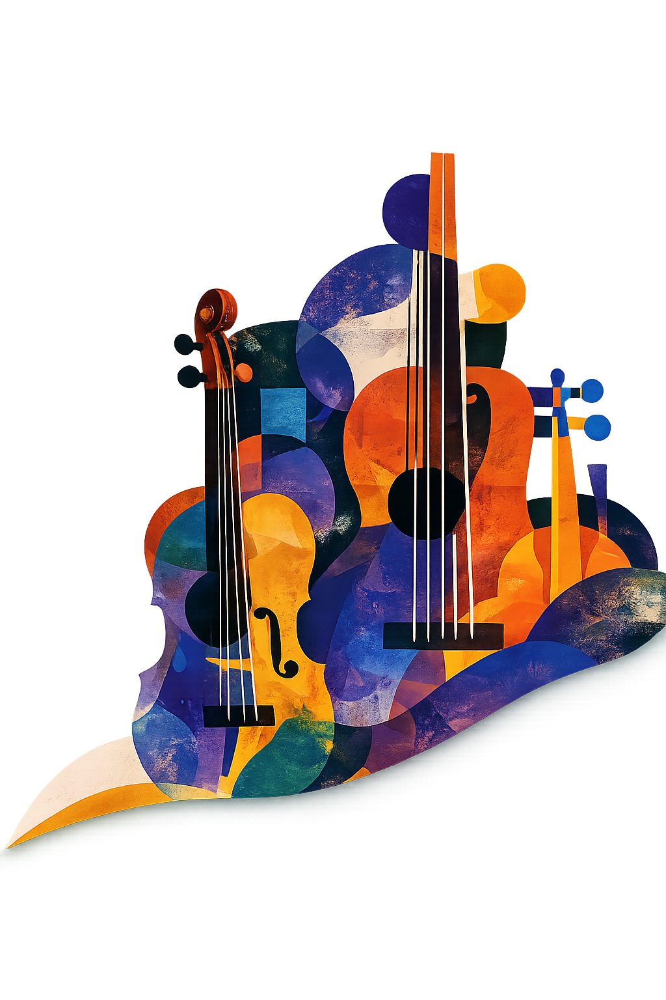
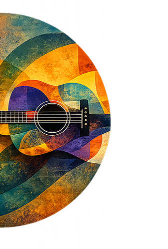
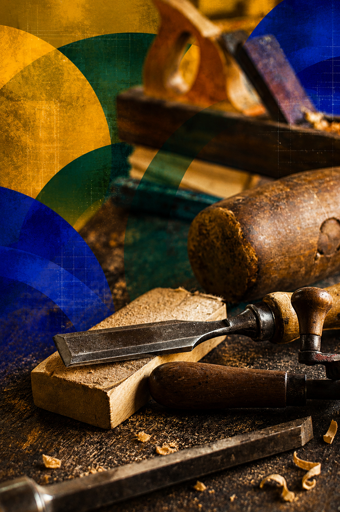
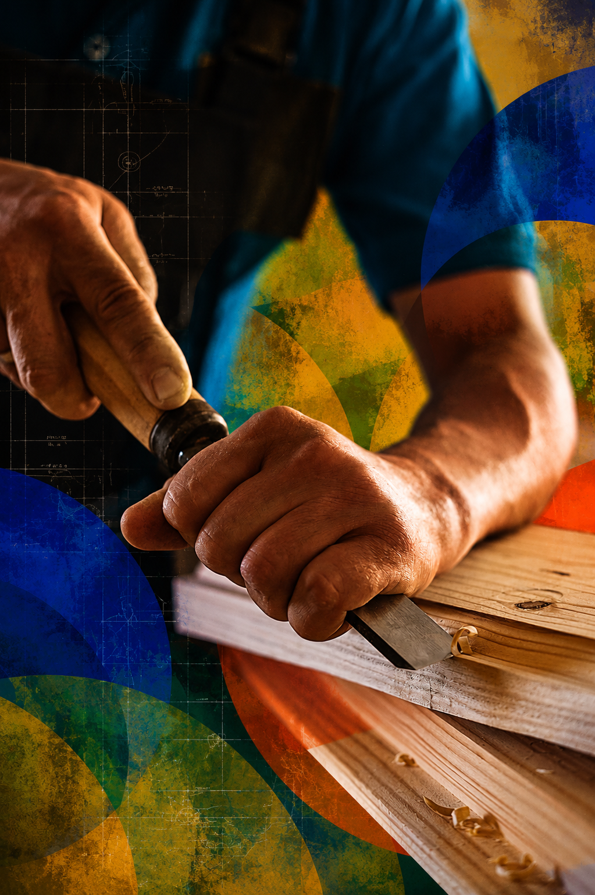
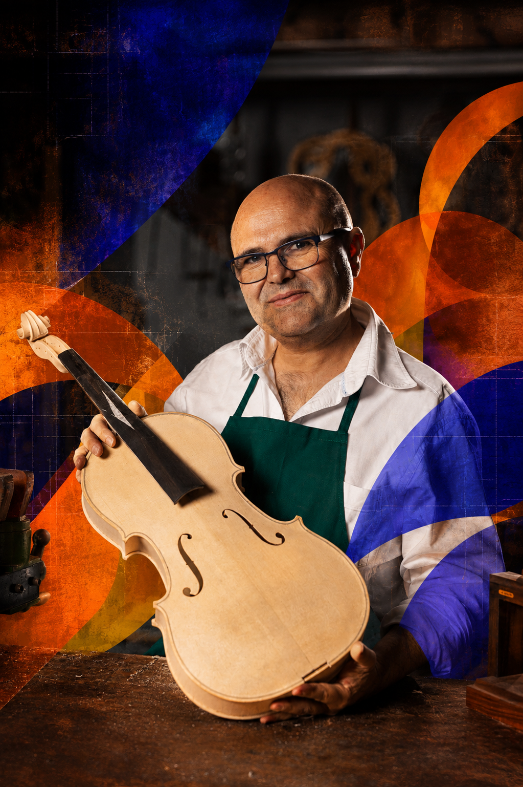
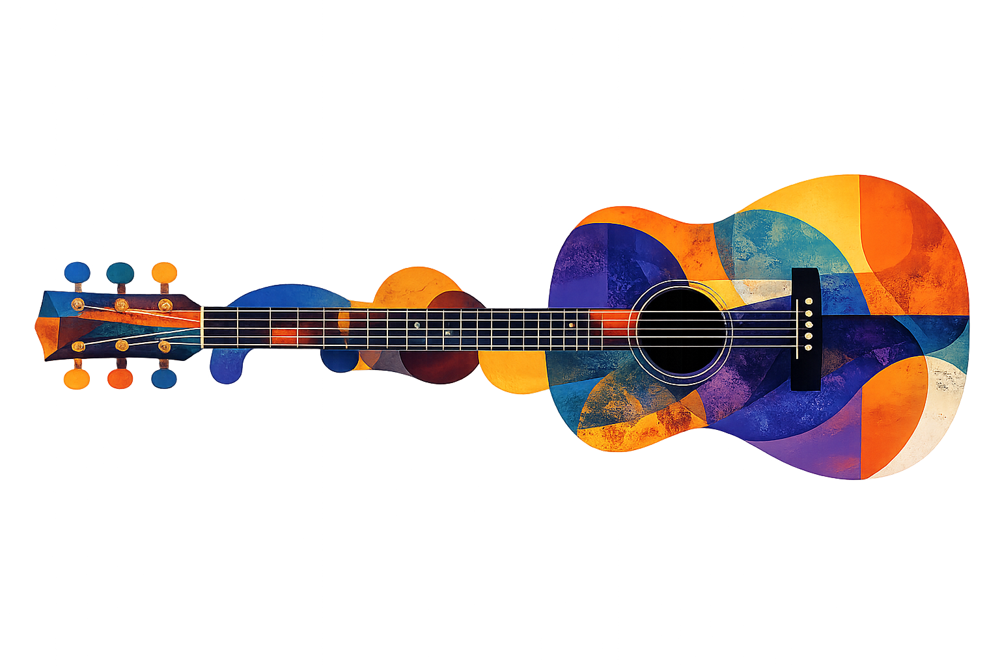
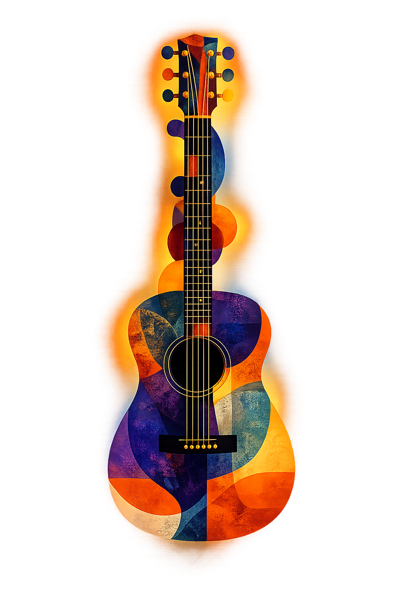
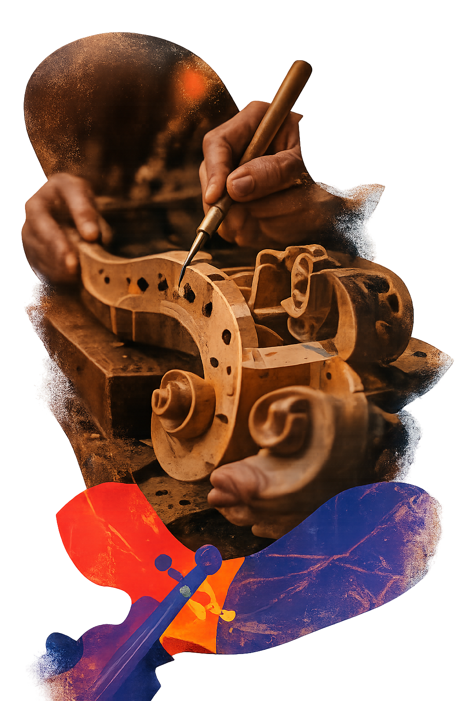

Por qué Trastes
Todo lo que necesitas
para construir mejor
Aprende a tu ritmo
Acceso de por vida sin plazos ni horarios fijos. Adaptá el aprendizaje a tu rutina.
Recursos descargables
Planos, listas de materiales y referencias técnicas listas para usar.
Comunidad online
Compartí avances, dudas y procesos con estudiantes y luthiers.
Retroalimentación
Recibí orientación profesional para mejorar tus terminaciones y decisiones.

Elige tu camino
Más popular
Construye tu guitarra acústica desde cero
Aprendé el proceso completo: selección de maderas, diseño, ensamblaje, puesta a punto y acabado final.
US$19748 hs de contenidoUS$32038% OFF
Quiero construir mi guitarra
Curso
Restauración de instrumentos acústicos
Devolvé vida y sonido a instrumentos dañados con procesos claros de reparación, diagnóstico y cuidado profesional.
US$14924 hs
Explorar curso

Curso
Puesta a punto y ajuste profesional
Aprendé acción, calibración e intonación con criterio técnico para mejorar sonido, comodidad y respuesta.
US$12918 hs
Explorar curso

Curso
Acabado y barnizado avanzado
Técnicas de terminación, sellado y barnizado para lograr instrumentos únicos, resistentes y con identidad propia.
US$16930 hs
Explorar curso

Metodología de trabajo


Elegí tu curso
Seleccioná el camino según tu nivel y objetivo.
Aprendé la técnica
Clases claras, recursos y procesos paso a paso.
Construí en tu taller
Aplicá cada herramienta en tu propio instrumento.
Recibí feedback
Compartí avances y mejorá con acompañamiento.
Mostrá tu obra
Presentá el resultado final a la comunidad.
Historias reales
Resultados reales

“Este curso me ayudó a construir mi primera guitarra profesional. El nivel de detalle en cada lección es extraordinario — no hay nada igual.”
Carlos M. · Estudiante de Trastes“Nunca pensé que podía construir un instrumento desde cero. Las clases son claras, ordenadas y muy fáciles de seguir.”
Mariana G. · Estudiante de Trastes“Lo mejor fue poder avanzar a mi ritmo y volver a ver cada proceso todas las veces que lo necesité.”
Juan P. · Estudiante de Trastes“La comunidad y las devoluciones me ayudaron muchísimo. Sentí acompañamiento real durante todo el proceso.”
Sofía R. · Estudiante de TrastesTu próxima guitarra empieza hoy
Dejá de coleccionar ideas. Empezá a construir.